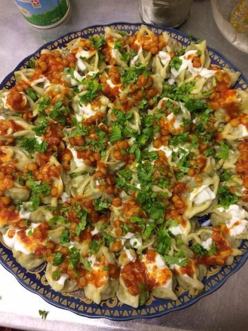

Manto

Description
The mantu is a thin dough that is filled with beef or
lamb mixed in onions and spices. The steamed foodstuff then
tops it off with an orange sauce made from chaka
(thick creamy strained yogurt),giving this dish its unique taste!
Ingredients
- 1 Lb Ground Lamb (can use beef)
- 2 Cups finely diced onions
- 1 spicy green chili
- 2 tsp salt
- 1 Tablespoon of ground coriander
- 1 Tablespoon of ground cumin
- 1 teaspoon of black pepper
- 3 Cups All-Purpose Flour
- 2 Tablespoons Vegetable Oil
- 2 Teaspoons of Salt
- 1.25 Cups of Water (Customize to your flour and weather conditions)